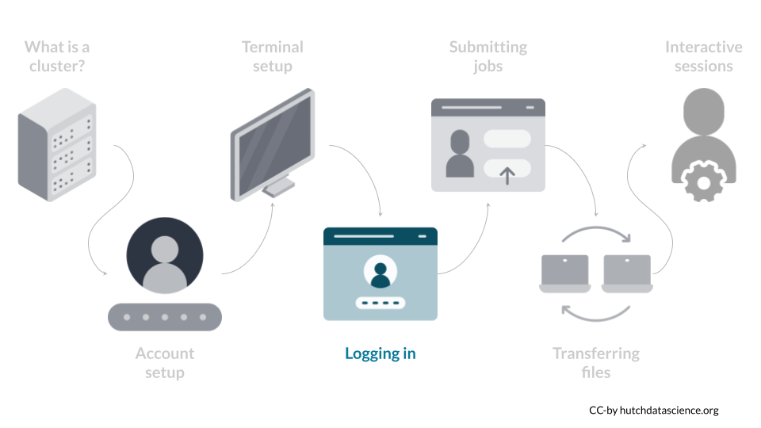
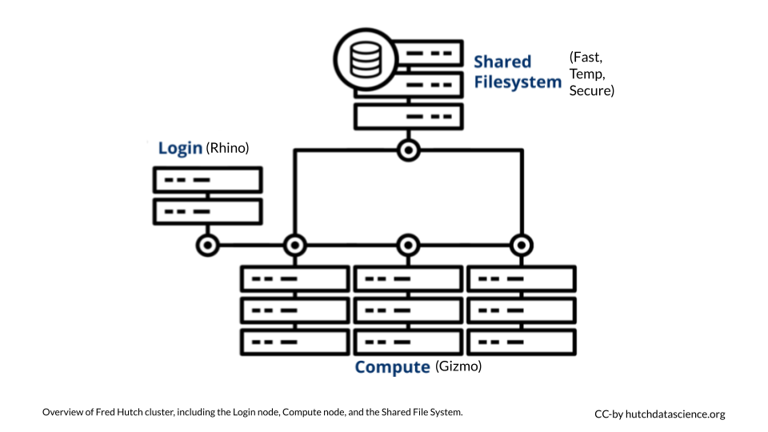

Chapter 5 Look around

Now that you have successfully logged in to the Fred Hutch cluster, it’s time to look around to see what compute node you have connected to, and what file storage systems are available.
5.1 Head and Compute Nodes
After logging in, you are connected to the Head Node (alternative names include the Login Node, or the Submit Node). At Fred Hutch, head node is also called Rhino. The purpose of the head node is to serve as a launching pad for the user: you are encouraged to look for files you want to use for your analysis, and once you know what data and software you want to use, you perform the computation on the Compute Nodes (alternative names include the Worker Node). At Fred Hutch, the compute nodes are called Gizmo. The compute notes have high CPU and RAM capacity for running demanding jobs, whereas the head node has very limited CPUs and RAM.
The diagram below illustrates the relationship between the head node, compute nodes, and the shared file storage systems: you start at the login (head) node, and you can look at the files on the shared file storage system. When you know what data and software you want to use for compute, you let the compute nodes do the job. The compute nodes are also connected to the shared file storage system.

5.2 File Storage Systems
Your current working directory (which can be printed by the pwd command) is the Home filesystem. You are given ~100GB of personal space, and this is usually for personal configuration of the cluster as a user.
The other storage resources available to researchers include:
Fast for shared data, including the majority of large scale research data. You can find it at
/fh/fast.Temp for temporary storage of files when using the cluster. You can find it at
/hpc/temp.Secure for data with higher-level security needs (PHI/encryption/auditing). You can find it at
/fh/secure.
The Fred Hutch Biomedical Data Science Wiki keeps up to date information about the file storage system.
Head Node
A node that is the default computer you log into when you connect to the Cluster. It has limited CPU and memory, and is used to explore the needed data and software to be used on the Compute Node. Also known as Login Node or Rhino at Fred Hutch.
Compute Node
A node with extensive CPU and memory used for high performance computing. Also known as the Worker Node or Gizmo at Fred Hutch.